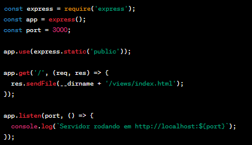

PARA CONFIGURAR O SERVIDOR IREMOS UTILIZAR O node.js E O express.
NODEJS:
- Instale o Node.js no seu computador (https://nodejs.org/).
- Abra a pasta do projeto no terminal e execute o comando para instalar as dependências:
npm install. - Para iniciar o servidor, execute o comando:
node app.js.
EXPRESS:
- Instale o Express no seu projeto:
npm install express. - Crie um arquivo chamado "app.js" para configurar o servidor.
- No final do arquivo, adicione a seguinte linha de código:
module.exports = app;. - Execute o comando:
node app.js. - Abra um navegador e acesse http://localhost:3000 para ver o site em funcionamento.
Exemplo de Arquivo app.js
Abaixo está um exemplo básico de como pode ser o conteúdo do arquivo "app.js" para configurar o servidor:
